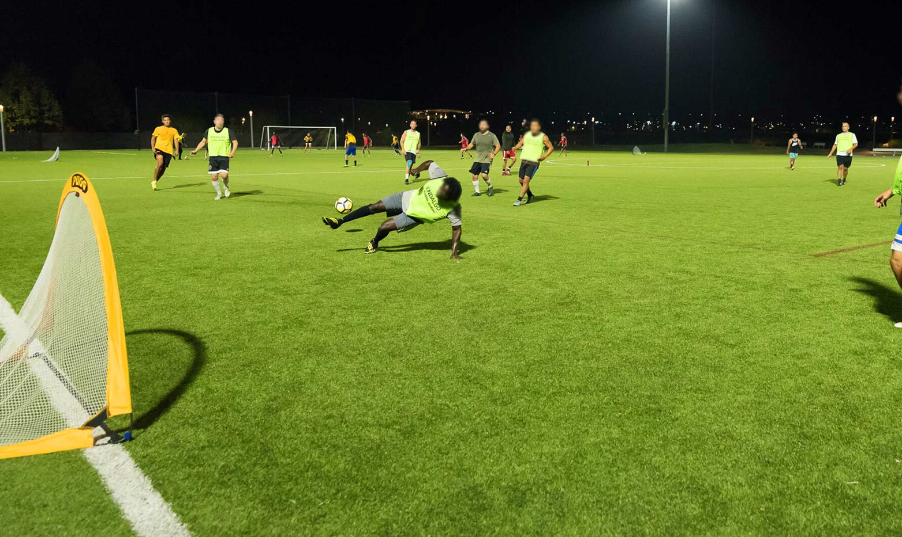

About Us
We started Pickup Soccer because we found that it was incredibly hard to find games going on in the United States. We were itching to play but had nowhere to go since it was just 3 of us. It started off as just an idea, something that we thought could change the way people played and viewed soccer in America. Then, we decided to build it.
Since Pickup Soccer launched in 2020, it has spread to multiple countries and has revolutionized the way the people approach the beautiful game. With a click in the app, you can announce that you have started a pickup game, which allows other users to search their area and find the game going on. No more struggles in the group chat and no more lonely training sessions. Whether you are a seasoned player trying to get some more practice in or just a lover of the game, it has never been easier to get on the pitch!
Some of the features of the app include:
- Searching for pickup games near you
- Choosing experience level
- Adding friends to play with later
- Scheduling regular pickup sessions
We never thought that Pickup Soccer would grow as fast and as wide as it did. We are deeply grateful for everyone that has decided to use our app. We are not professional soccer players, we are not world-class coaches, and we are not famous commentators. We are just like you. Fans of the game who want to play every weekend we can. So we hope to see you on the field.
- The Pickup Soccer Team
The first games organized through Pickup Soccer:
